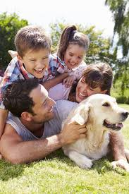
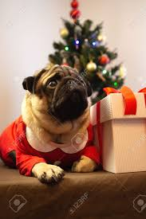

Wrapping That Makes Tails Wag!
Who Are We?
We’re pet lovers and gift-givers who believe every celebration should include our furry family members! Tired of worrying about pets chewing on traditional gift wrap, we created a safe, fun, and eco-friendly solution made just for them. Wrap & Wag was born from the simple idea that every tail deserves to wag during special moments.

Why Wrap & Wag?
Because your pets are part of the family! Traditional wrapping paper isn’t safe for curious paws and playful snouts. That’s why we designed a sustainable, pet-friendly alternative that’s as kind to animals as it is to the planet. With Wrap & Wag, every unwrapping moment becomes a shared celebration.
Why Wrap & Wag?
Gift-giving should include everyone—even your pets! Traditional wrapping paper isn’t pet-safe, so we created a non-toxic, eco-friendly alternative made from digestible materials and food-grade inks. Now your furry friends can safely tear, taste, and celebrate with you!
